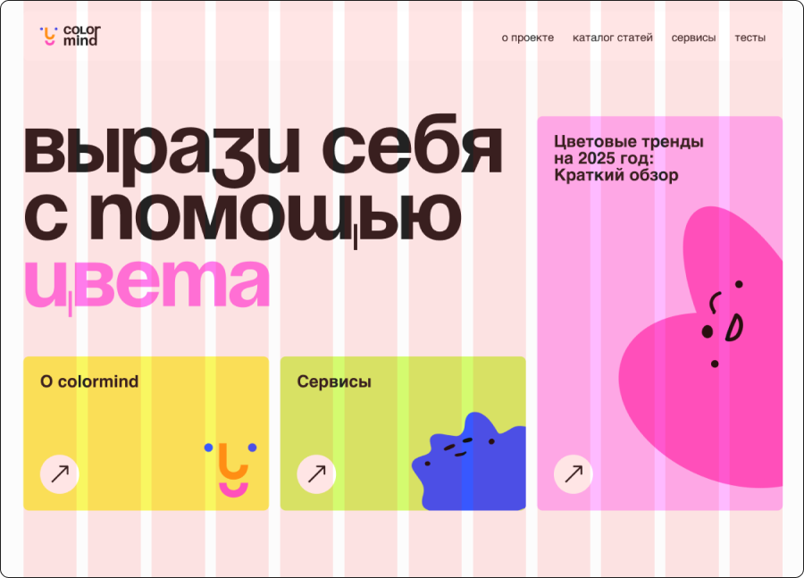
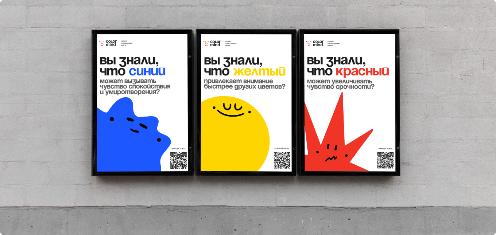
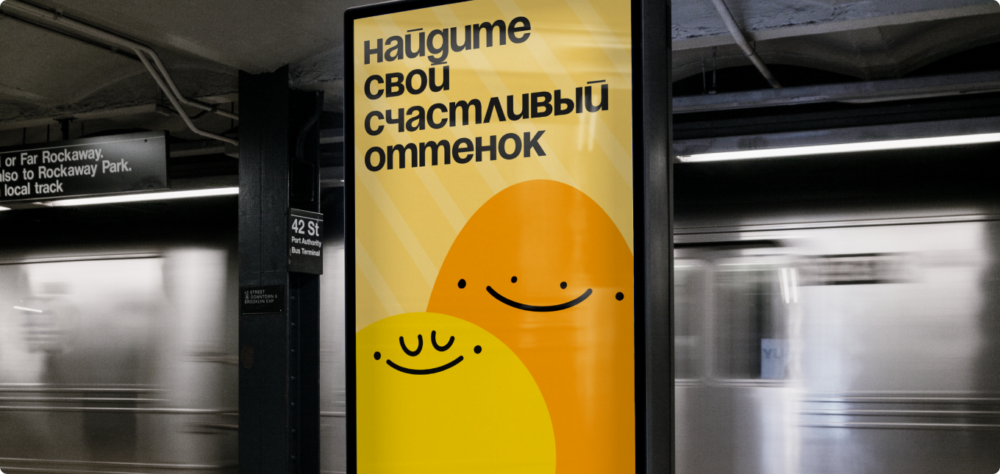
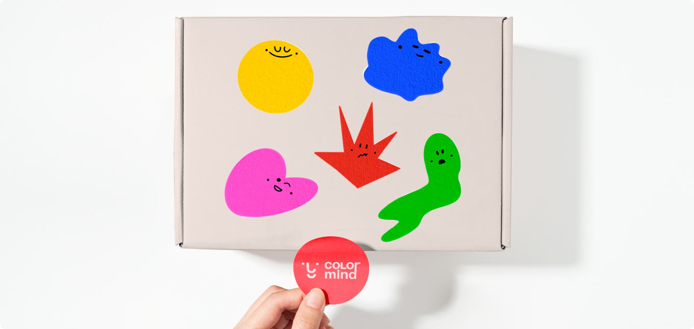

colormind стайлгайд
о бренде
Colormind — медиа-сервис о психологии цвета, который поможет проинформировать людей о том, как цвет влияет на восприятие человека
миссия и ценности
Мы стремимся сделать психологию цвета доступной и понятной для всех. Colormind предоставляет доступ к достоверной информации по психологии цвета от экспертов в этой области
образование
вдохновение
самовыражение
понимание себя
Логотип
Логотип Colormind, несмотря на свою простоту, обладает игривым и дружелюбным характером
Графический символ состоит из упрощённых округлых форм ярких контрастных цветов. Формы расположены так, чтобы создать подобие лица: два маленьких синих круга изображают глаза, оранжевая форма образует нос, а розовая — улыбку.
Формы намеренно простые и геометрические, в них приоритет отдан ясности и запоминаемости, а не сложным деталям
игривый и располагающий к себе
Абстрактная форма, напоминающая лицо (составленная из округлых, ярко окрашенных фигур), создаёт дружелюбное и располагающее к себе впечатление
современный и минималистичный
Формы простые и геометрические, без чрезмерно сложных или детализированных элементов
выразительный и коммуникативный
Яркие цвета привлекают внимание и намекают на энергичность и вовлечённость. «Улыбка» внизу — это мгновенно узнаваемый символ счастья и позитива
символическая
связь
Графика предполагает связь между цветом и эмоциями. Сочетание фигур напоминает упрощённое изображение лица, что предполагает связь между цветом и эмоциональной реакцией
охранное поле
Верхняя и нижняя части находятся на расстоянии 1 х от логотипа, измеряемом с использованием х-высоты буквы «i» в поле «mind».
Левая и правая стороны — 1,5 х от логотипа
так можно:
Логотип может применяться в других цветах (они должны быть контрастными и использоваться в фирменном стиле)
В графическом символе могут применяться различные эмоции в зависимости от контекста
так нельзя:
Логотип недопустимо искажать (поворачивать, растягивать), разбирать знак на части, располагать его слишком близко к тексту
типографика
заголовки
Soyuz Grotesk
Aa Bb Cc Dd Ee Ff Gg Hh Ii Jj Kk Ll Mm Nn Oo Pp Qq Rr Ss Tt Uu Vv WW Xx Yy Zz 1234567890
текст
Helvetica
Aa Bb Cc Dd Ee Ff Gg Hh Ii Jj Kk Ll Mm Nn Oo Pp Qq Rr Ss Tt Uu Vv WW Xx Yy Zz 1234567890
цвета
основные
дополнительные
сетка
12 колонок, марджин — 40, гаттер 20
графика
Colormind использует простые и яркие образы для создания дружелюбной и запоминающейся атмосферы, в которой цвет является основным элементом, несущим эмоциональную нагрузку
правила использования
цветовая психология
Каждый цвет персонажа должен быть связан с определенной эмоцией
композиция
Персонажи могут быть сгруппированы в композицию, но при этом следует избегать хаоса. Они должны быть сбалансированы и сочетаться по цвету и форме
пространство
Вокруг персонажей должно быть достаточно свободного пространства, чтобы не создавать ощущения перегруженности.
обновления
Допустимо вводить новые варианты использования персонажей и обновлять их стилистику, чтобы поддерживать интерес пользователей
носители
  Команда

Кира

Диана